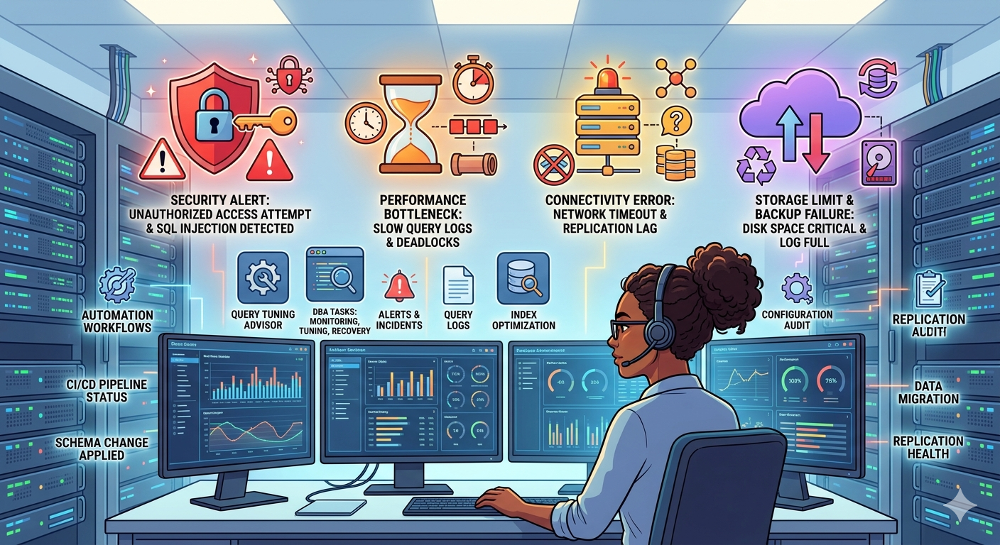
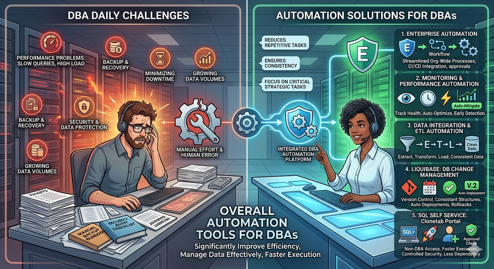
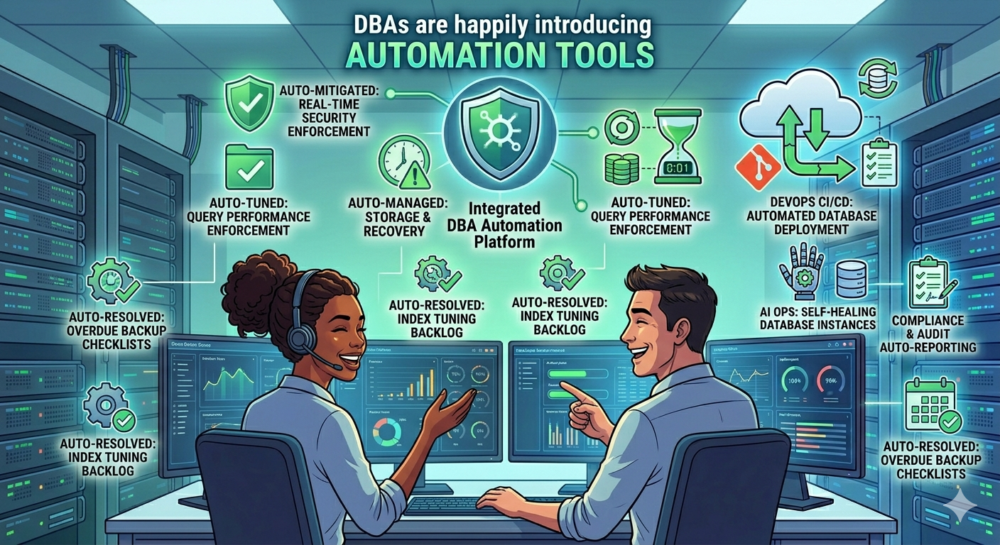

Biggest Challenges DBAs Face Daily
- Performance issues like slow queries and high system load
- Ensuring reliable backup and recovery
- Maintaining security and preventing unauthorized access
- Ensuring high availability and minimal downtime
- Handling growing data volumes and scalability
- Data consistency across multiple environments
- Continuous monitoring and managing frequent alerts
- Handling deployments and production changes safely

What are Automation Tools?
Automation tools are software that help you perform repetitive tasks automatically instead of manually. They save time, reduce errors, and make work faster and more reliable.
For example, these tools can automatically:
- Test applications and deploy updates
- Monitor systems and send alerts when something goes wrong
- Process data and connect different systems
In short, automation tools take care of routine work so teams (like DBAs) can focus on more important and strategic tasks instead of repeating the same things again and again.
How can automation tools effectively resolve these challenges?
Automation tools help DBAs by taking care of repetitive and time-consuming tasks like monitoring, backups, and deployments. This not only saves time but also improves overall efficiency.
They enhance performance by automatically detecting slow queries and optimizing them. Automated backup and recovery ensure data is safe and can be quickly restored in case of failure.
Automation also strengthens security through regular audits and controlled access management. It helps maintain high availability by identifying issues early and triggering alerts or automatic fixes.
In addition, automation simplifies data management, replication, and scaling. By reducing human errors and ensuring consistency, it allows DBAs to focus more on critical and strategic tasks instead of routine work.

Enterprise Automation
Enterprise Automation refers to the use of automation tools and technologies across an entire organization to streamline business processes, reduce manual work, and improve overall efficiency.
In simple terms, it automates large-scale operations like workflows, approvals, deployments, data processing, and system integrations (such as finance, IT, and databases).
Unlike task-specific automation, enterprise automation covers end-to-end business processes across the entire organization, making operations faster, more consistent, and less error-prone.
Why We Use Enterprise Automation?
- Improves Efficiency: Automates repetitive tasks, saving time and increasing productivity.
- Reduces Manual Errors: Minimizes human mistakes by ensuring consistent and accurate execution of processes.
- Enhances Process Consistency: Standardizes workflows across teams and departments.
- Faster Decision Making: Provides real-time data and automated insights for quicker decisions.
- Better Integration Across Systems: Connects different systems (IT, finance, databases) for smooth data flow.
- Scalability: Easily handles growing workloads without increasing manual effort.
Monitoring & Performance Automation
Monitoring and Performance Automation refers to the use of tools and systems to automatically track database health, detect issues, and optimize performance without manual intervention.
In simple terms, these tools continuously monitor metrics like CPU usage, memory, query performance, and database load. If any issue is detected (such as slow queries or high resource usage), the system can automatically send alerts or take corrective actions.
Why We Use Monitoring & Performance Automation?
- Early Detection of Issues: Identifies performance problems before they become critical.
- Reduced Downtime: Proactive alerts help resolve issues quickly and minimize system outages.
- Automatic Query Optimization: Detects slow queries and helps improve database performance.
- Improved Stability and Efficiency: Keeps systems running smoothly with continuous monitoring.
- Less Manual Effort: Reduces the need for constant manual monitoring by DBAs.
Data Integration & ETL Automation
Data Integration & ETL Automation is the process of automatically collecting data from multiple sources, transforming it into a usable format, and loading it into a target system such as a database or data warehouse.
In simple terms, it helps gather data from different systems, clean and organize it, and store it in one place for easy access and analysis.
ETL – Full Form
- Extract: Collecting data from various sources like databases, APIs, and files.
- Transform: Cleaning, formatting, and modifying the data into a usable form.
- Load: Storing the processed data into a target system (database or data warehouse)
Why We Use Data Integration & ETL Automation?
- Centralized Data Management: Users can execute SQL without waiting for DBA support.
- Reduces Manual Effort and Errors: Queries are executed quickly through an approval process.
- Ensures Data Consistency and Accuracy: Approval workflow ensures safe execution of SQL scripts.
- Supports Reporting and Analytics: Teams can work independently and complete tasks faster.
Liquibase
Liquibase is an open-source database change management and automation tool that tracks, manages, and applies database schema changes in a controlled and versioned way.
In simple terms, it helps manage database changes like creating tables or updating columns automatically, ensuring consistency across all environments without manual work.
Why We Use Liquibase?
- Version Control for DB Changes: Tracks every database change, including who made it, what was changed, and when.
- Automated Deployments: Automatically applies SQL changes across different environments such as Development, QA, and Production.
- Consistency Across Environments: Ensures the same database structure is maintained everywhere, avoiding mismatches.
- CI/CD Integration: Easily integrates with tools like Jenkins and GitLab to support automated deployment pipelines.
- Reduces Manual Work and Errors: Eliminates the need to run scripts manually, reducing the chances of mistakes.
- Rollback Support: Provides the ability to revert changes if something goes wrong.
SQL Self Service
SQL Self Service is a productivity tool by Clonetab that enables non-DBA users—such as IT support teams, business users, and developers—to execute SQL queries independently. It provides a self-service portal where users can run SQL scripts on databases like Oracle, HANA, MySQL, and MS SQL Server without direct DBA involvement.
Why We Use SQL Self Service?
- Reduces dependency on DBAs: Users can execute SQL without waiting for DBA support
- Faster query execution: Queries are executed quickly through an approval process
- Controlled and secure access: Approval workflow ensures safe execution of SQL scripts
- Improves Efficiency: Teams can work independently and complete tasks faster
- Reduces Wait Time: No need to raise tickets and wait for DBA availability

Conclusion: The Role of Automation Tools for DBAs
Automation tools may not eliminate every challenge faced by DBAs, but they play a crucial role in improving overall efficiency and reliability. By reducing manual effort, enabling continuous monitoring, and streamlining data management, these tools help teams work faster and more effectively.
They also support better performance, quicker issue resolution, and more consistent operations across environments. As a result, DBAs can focus more on strategic tasks rather than routine activities, making automation an essential part of modern database management.